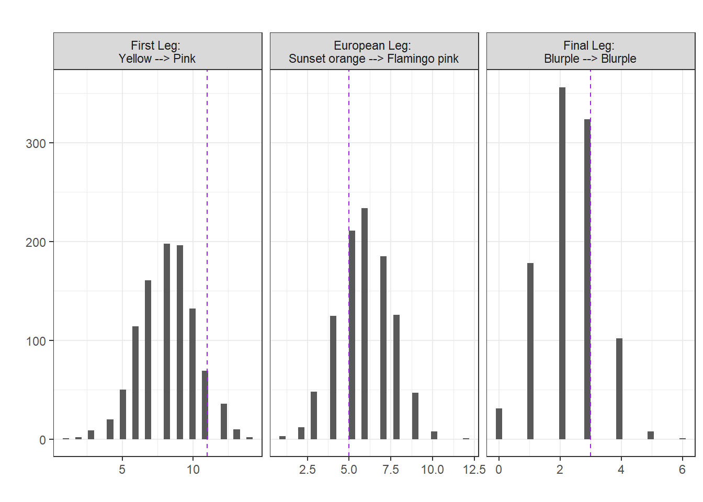
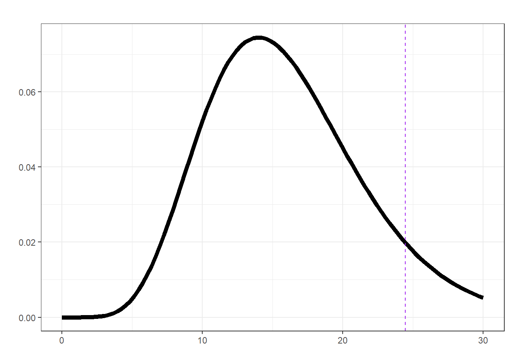

3 Are the surprise song outfits random?
In this section we’re going to look at the order of surprise song outfits. First let’s just select the data we need.
data <- data.frame(Outfit = oneRowPerConcert$DressName,
Leg = ifelse(oneRowPerConcert$Legs %in% c("First leg", "Latin America", "Asia-Oceania"),
"First",
ifelse(oneRowPerConcert$Legs == "European leg", "Europe", "Final")))
data |> head() Outfit Leg
1 Pink First
2 Green First
3 Pink First
4 Green First
5 Green First
6 Pink FirstNow, let’s look at the outfit transitions by creating a transition matrix using a simple function transition_matrix, which takes a sequence of categorical events and returns a table of the number of observed transitions between each event (in our case named outfits).
transitions <- function(x) {
n <- length(x)
table(x[-n], x[-1])
}Looking at the outfit transitions.
data$Outfit |> transitions() |> knitr::kable(caption = "Outfit transitions of Swift's Eras tour")| Blue | Blurple | Cotton candy | Flamingo pink | Grapefruit | Green | Ocean blue | Pink | Popsicle | Sunset orange | Yellow | |
|---|---|---|---|---|---|---|---|---|---|---|---|
| Blue | 1 | 0 | 0 | 1 | 0 | 1 | 0 | 3 | 0 | 0 | 3 |
| Blurple | 0 | 3 | 1 | 0 | 2 | 0 | 0 | 0 | 0 | 0 | 0 |
| Cotton candy | 0 | 1 | 0 | 0 | 0 | 0 | 0 | 0 | 2 | 0 | 0 |
| Flamingo pink | 0 | 0 | 0 | 1 | 0 | 0 | 4 | 0 | 0 | 10 | 0 |
| Grapefruit | 0 | 0 | 1 | 0 | 0 | 0 | 0 | 0 | 2 | 0 | 0 |
| Green | 3 | 0 | 0 | 0 | 0 | 2 | 0 | 7 | 0 | 0 | 8 |
| Ocean blue | 0 | 0 | 0 | 8 | 0 | 0 | 0 | 0 | 0 | 6 | 0 |
| Pink | 2 | 0 | 0 | 0 | 0 | 11 | 0 | 7 | 0 | 0 | 9 |
| Popsicle | 0 | 2 | 0 | 0 | 1 | 0 | 0 | 0 | 0 | 1 | 0 |
| Sunset orange | 0 | 1 | 1 | 5 | 0 | 0 | 10 | 0 | 0 | 3 | 0 |
| Yellow | 3 | 0 | 0 | 0 | 0 | 6 | 0 | 11 | 0 | 0 | 3 |
This is quite a sparse table (we know some outfits didn’t appear until later legs of the tour). So, let’s consider the transitions for each of the three main legs.
## first leg
first_leg <- data[data$Leg == "First", "Outfit"]
first_leg |> transitions() |> knitr::kable(caption = "Outfit transitions for the first leg of Swift's Eras tour")| Blue | Green | Pink | Yellow | |
|---|---|---|---|---|
| Blue | 1 | 1 | 3 | 3 |
| Green | 3 | 2 | 7 | 8 |
| Pink | 2 | 11 | 7 | 9 |
| Yellow | 3 | 6 | 11 | 3 |
## europe leg
mid_leg <- data[data$Leg == "Europe", "Outfit"]
mid_leg |> transitions() |> knitr::kable(caption = "Outfit transitions for the European leg of Swift's Eras tour")| Flamingo pink | Ocean blue | Sunset orange | |
|---|---|---|---|
| Flamingo pink | 1 | 4 | 10 |
| Ocean blue | 8 | 0 | 6 |
| Sunset orange | 5 | 10 | 3 |
## final leg
final_leg <- data[data$Leg == "Final", "Outfit"]
final_leg |> transitions() |> knitr::kable(caption = "Outfit transitions for the final leg of Swift's Eras tour")| Blurple | Cotton candy | Grapefruit | Popsicle | Sunset orange | |
|---|---|---|---|---|---|
| Blurple | 3 | 1 | 2 | 0 | 0 |
| Cotton candy | 1 | 0 | 0 | 2 | 0 |
| Grapefruit | 0 | 1 | 0 | 2 | 0 |
| Popsicle | 2 | 0 | 1 | 0 | 1 |
| Sunset orange | 1 | 0 | 0 | 0 | 0 |
3.1 A \(\chi^2\)-test for the transition counts
Likely, the first standard hypothesis test you think of for count/contingency data is the \(\chi^2\)-test (or the chi-squared test). Essentially, this works by testing for equal transition rates (if the outfit choices were completely random we’d expect equal numbers of transitions between the outfits); Slightly more formally,
\(H_0 = \text{row outfits independent of column outfits}\) vs. \(H_1 = \text{row outfits not independent of column outfits}\).
## first leg
first_leg |> transitions() |> chisq.test()
Pearson's Chi-squared test
data: transitions(first_leg)
X-squared = 10.259, df = 9, p-value = 0.33## europe leg
mid_leg |> transitions() |> chisq.test()
Pearson's Chi-squared test
data: transitions(mid_leg)
X-squared = 19.554, df = 4, p-value = 0.0006115## final leg
final_leg |> transitions() |> chisq.test()
Pearson's Chi-squared test
data: transitions(final_leg)
X-squared = 17.337, df = 16, p-value = 0.3641| Chi-squared statistic | Degrees of freedom | p-vlaue | |
|---|---|---|---|
| First Leg | 10.259 | 9 | 0.330 |
| European Leg | 19.554 | 4 | 0.001 |
| Final Leg | 17.337 | 16 | 0.364 |
Therefore, if our \(\chi^2\) assumptions were met we might infer that there’s some evidence against the outfits for the European leg being random.
3.2 A randomisation test
If we’re not happy that our parametric assumptions are met then we can (often) fall back on simple resampling methods; basically simulating what would happen under chance alone and then comparing how our observed situation stack up!
To begin with let’s use the \(\chi^2\)-squared statistic to represent the transition matrix we observed for each leg (it is a valid metric comparing between what we expected under independence and what we observed). By using a randomisation test we can build up a sampling distribution of this chosen metric that represent what would happen under chance alone (i.e., without any assumptions about the shape of this distribution). Our observed statistics in this case are given in the first column of Table 3.1.
## create a function for the randomisation test using chi-sq
## on the transition matrix, using a for loop just bc
randomisation <- function(data, nreps = 1000, seed = 1984){
sampling_dist <- numeric(nreps)
set.seed(seed)
for (i in 1:nreps) {
sampling_dist[i] <- suppressWarnings(sample(data) |>
transitions() |>
chisq.test())$statistic
}
return(sampling_dist)
}Calculating a p-value (note they’re all pretty much the same as above!).
## first leg
null_first <- randomisation(first_leg)
mean(null_first >= (first_leg |> transitions() |> chisq.test())$statistic)[1] 0.336## European leg
null_mid <- randomisation(mid_leg)
mean(null_mid >= (mid_leg |> transitions() |> chisq.test())$statistic)[1] 0.001## Final leg
null_final <- randomisation(final_leg)
mean(null_final >= (final_leg |> transitions() |> chisq.test())$statistic)[1] 0.322But, we can actually use any metric we like in a randomisation test! For our example, the \(\chi^2\) is a nice (distance) statistic because it considers all the transitions, but if we were particularly interested in, say, a particular transition (e.g., Yellow \(\rightarrow\) Pink for the first leg) we could look at those instead.
\(H_0 = \text{A particular transition occured at random}\)
vs.
\(H_1 = \text{A particular transition occured fewer or more times than expected}\).
[Note: than expected means than was expected under chance alone.]
## create a new function for the randomisation test using the
## numbers of a particular transition (from --> to)
randomisation <- function(data, from = "Yellow", to = "Pink",
nreps = 1000, seed = 1984){
sampling_dist <- numeric(nreps)
set.seed(seed)
for (i in 1:nreps) {
sampling_dist[i] <- (sample(data) |> transitions())[from, to]
}
return(sampling_dist)
}Calculating a two-sided p-value.
## first leg, Yellow --> Pink (default)
null_first <- randomisation(first_leg)
obs_first <- (first_leg |> transitions())["Yellow", "Pink"]
mean(abs(null_first - mean(null_first)) >= abs(obs_first - mean(null_first)))[1] 0.199## European leg, Sunset orange --> Flamingo pink
null_mid <- randomisation(mid_leg, from = "Sunset orange", to = "Flamingo pink")
obs_mid <- (mid_leg |> transitions())["Sunset orange", "Flamingo pink"]
mean(abs(null_mid - mean(null_mid)) >= abs(obs_mid - mean(null_mid)))[1] 0.766## Final leg, Blurple --> Blurple
null_final <- randomisation(final_leg, from = "Blurple", to = "Blurple")
obs_final <- (final_leg |> transitions())["Blurple", "Blurple"]
mean(abs(null_final - mean(null_final)) >= abs(obs_final - mean(null_final)))[1] 0.644
In each case, no evidence to suggest we see the particular transitions more or less frequently than would be expected under the NULL hypothesis of chance alone. (Note the transitions were chosen arbitrarily)
3.3 A likelihood ratio test
What about using a model based approach? If the outfits were random (given the choices) then we’d expect each to occur independently of one another (i.e., the chance of one outfit is independent of any other).
Let’s consider the first leg, defining the events mathematically we let \(\{X_1, X_2, \ldots, X_n\}\) be the outfits taking values in \(\{\text{Blue}, \text{Green}, \text{Pink}, \text{Yellow}\}\) (i.e., four possible categories).
If the outfits were independent then we can write the likelihood as
\[L_0(p; x) = \prod_{t=1}^{n} P(X_t = x_t) = \prod_{j=1}^{4} p_j^{n_j}\].
Here \(p_j\) is the probability of observing category \(j\), \(n_j\) is the number of times category \(j\) appears from \(t=2\) to \(n\), and \(\sum_{j=1}^{k} p_j = 1\). The log-likelihood is therefore \[\log L_0(p;x) = \sum_{t=2}^{n} \log p_{x_t} = \sum_{j=1}^{4} n_j \log p_j\].
Calculating this in R step-by-step
n <- length(first_leg)
n[1] 81k <- length(unique(first_leg))
k[1] 4chain <- as.factor(first_leg)
chain [1] Pink Green Pink Green Green Pink Yellow Pink Green Yellow
[11] Pink Green Green Pink Yellow Pink Green Yellow Pink Yellow
[21] Green Yellow Green Pink Pink Green Yellow Pink Green Yellow
[31] Pink Yellow Yellow Pink Green Pink Pink Yellow Yellow Pink
[41] Green Pink Pink Yellow Pink Pink Pink Pink Yellow Green
[51] Blue Blue Pink Green Yellow Blue Pink Yellow Yellow Blue
[61] Green Blue Yellow Green Blue Yellow Pink Green Yellow Pink
[71] Blue Pink Blue Yellow Green Yellow Green Pink Pink Yellow
[81] Blue
Levels: Blue Green Pink Yellowp_indep <- table(chain) / n
p_indep ## independent probabilitieschain
Blue Green Pink Yellow
0.1111111 0.2469136 0.3580247 0.2839506 p_indep[as.integer(chain)] ## probabilities of each element as they occurchain
Pink Green Pink Green Green Pink Yellow Pink
0.3580247 0.2469136 0.3580247 0.2469136 0.2469136 0.3580247 0.2839506 0.3580247
Green Yellow Pink Green Green Pink Yellow Pink
0.2469136 0.2839506 0.3580247 0.2469136 0.2469136 0.3580247 0.2839506 0.3580247
Green Yellow Pink Yellow Green Yellow Green Pink
0.2469136 0.2839506 0.3580247 0.2839506 0.2469136 0.2839506 0.2469136 0.3580247
Pink Green Yellow Pink Green Yellow Pink Yellow
0.3580247 0.2469136 0.2839506 0.3580247 0.2469136 0.2839506 0.3580247 0.2839506
Yellow Pink Green Pink Pink Yellow Yellow Pink
0.2839506 0.3580247 0.2469136 0.3580247 0.3580247 0.2839506 0.2839506 0.3580247
Green Pink Pink Yellow Pink Pink Pink Pink
0.2469136 0.3580247 0.3580247 0.2839506 0.3580247 0.3580247 0.3580247 0.3580247
Yellow Green Blue Blue Pink Green Yellow Blue
0.2839506 0.2469136 0.1111111 0.1111111 0.3580247 0.2469136 0.2839506 0.1111111
Pink Yellow Yellow Blue Green Blue Yellow Green
0.3580247 0.2839506 0.2839506 0.1111111 0.2469136 0.1111111 0.2839506 0.2469136
Blue Yellow Pink Green Yellow Pink Blue Pink
0.1111111 0.2839506 0.3580247 0.2469136 0.2839506 0.3580247 0.1111111 0.3580247
Blue Yellow Green Yellow Green Pink Pink Yellow
0.1111111 0.2839506 0.2469136 0.2839506 0.2469136 0.3580247 0.3580247 0.2839506
Blue
0.1111111 p_indep[as.integer(chain)] |> log() ## log probabilities of each element as they occurchain
Pink Green Pink Green Green Pink Yellow Pink
-1.027153 -1.398717 -1.027153 -1.398717 -1.398717 -1.027153 -1.258955 -1.027153
Green Yellow Pink Green Green Pink Yellow Pink
-1.398717 -1.258955 -1.027153 -1.398717 -1.398717 -1.027153 -1.258955 -1.027153
Green Yellow Pink Yellow Green Yellow Green Pink
-1.398717 -1.258955 -1.027153 -1.258955 -1.398717 -1.258955 -1.398717 -1.027153
Pink Green Yellow Pink Green Yellow Pink Yellow
-1.027153 -1.398717 -1.258955 -1.027153 -1.398717 -1.258955 -1.027153 -1.258955
Yellow Pink Green Pink Pink Yellow Yellow Pink
-1.258955 -1.027153 -1.398717 -1.027153 -1.027153 -1.258955 -1.258955 -1.027153
Green Pink Pink Yellow Pink Pink Pink Pink
-1.398717 -1.027153 -1.027153 -1.258955 -1.027153 -1.027153 -1.027153 -1.027153
Yellow Green Blue Blue Pink Green Yellow Blue
-1.258955 -1.398717 -2.197225 -2.197225 -1.027153 -1.398717 -1.258955 -2.197225
Pink Yellow Yellow Blue Green Blue Yellow Green
-1.027153 -1.258955 -1.258955 -2.197225 -1.398717 -2.197225 -1.258955 -1.398717
Blue Yellow Pink Green Yellow Pink Blue Pink
-2.197225 -1.258955 -1.027153 -1.398717 -1.258955 -1.027153 -2.197225 -1.027153
Blue Yellow Green Yellow Green Pink Pink Yellow
-2.197225 -1.258955 -1.398717 -1.258955 -1.398717 -1.027153 -1.027153 -1.258955
Blue
-2.197225 ll0 <- p_indep[as.integer(chain)] |> log() |> sum() ## log likelihood
ll0[1] -106.4928Now, what about the likelihood if we assume the sequence of outfits is a first-order Markov chain (i.e., the current outfit \(X_t\) depends on the previous one \(X_{t-1}\)):
\[P(X_t = x_t \mid X_{t-1} = x_{t-1}) = P_{x_{t-1}, x_t}.\]
Here \(P_{i,j}\) is the probability of transitioning from state \(i\) to state \(j\), again with \(\sum_{j=1}^{k} P_{i,j} = 1 \quad \text{for all } i\). We can write the likelihood as
\[L_1(p;x_t|x_{t-1}) = \prod_{t=2}^{n} P(X_t = x_t \mid X_{t-1} = x_{t-1}) = \prod_{i=1}^{k} \prod_{j=1}^{k} P_{i,j}^{N_{i,j}}\]
Where \(N_{i,j}\) is the number of transitions from state \(i\) to state \(j\). The log-likelihood is then
\[\log(L_1(p;x_t|x_{t-1})) = \sum_{t=2}^{n} \log (P_{x_{t-1}, x_t}) = \sum_{i=1}^{k} \sum_{j=1}^{k} N_{i,j} \log (P_{i,j})\]
Calculating this in R step-by-step
## transition probability matrix
tm <- prop.table(transitions(first_leg), 1) ## over rows
tm
Blue Green Pink Yellow
Blue 0.12500000 0.12500000 0.37500000 0.37500000
Green 0.15000000 0.10000000 0.35000000 0.40000000
Pink 0.06896552 0.37931034 0.24137931 0.31034483
Yellow 0.13043478 0.26086957 0.47826087 0.13043478## using a for loop
ll1 <- 0 ## initialise
for(i in 2:n){
lli <- log(tm[chain[i-1], chain[i]]) ## element of tm
ll1 <- ll1 + lli
}
ll1 ## log likelihood assuming a first-order Markov chain[1] -99.9088## we can benchmark using the markovchain package
markovchain::markovchainFit(data = first_leg, method = "mle")$logLikelihood[1] -99.9088Construction a likelihood ratio test statistic
\[\Lambda = 2 \left( \log(L_1(p;x_t|x_{t-1})) - \log(L_0(p; x)) \right)\]
Under the NULL hypothesis \(H_0\), the test statistic \(\Lambda\) asymptotically follows a \(\chi^2\) distribution with degrees of freedom \(\text{df} = (k - 1)^2\).
In R
delta <- 2 * (ll1 - ll0)
df <- (k - 1)^2
p_val <- pchisq(delta, df, lower.tail = FALSE)No evidence against the outfits being independent.

So, let’s make a function.
lrt <- function(x, plot = FALSE){
## under H0
n <- length(x)
k <- length(unique(x))
chain <- as.factor(x)
p_indep <- table(chain) / n
ll0 <- p_indep[as.integer(chain)] |> log() |> sum()
## first-order Markov
tm <- prop.table(transitions(x), 1)
ll1 <- 0
for(i in 2:n){
lli <- log(tm[chain[i-1], chain[i]])
ll1 <- ll1 + lli
}
## test statistic
delta <- 2 * (ll1 - ll0)
df <- (k - 1)^2
p_val <- pchisq(delta, df, lower.tail = FALSE)
if(plot){
chi <- data.frame(x = seq(0, 30, length.out = 100))
chi$density <- dchisq(chi$x, df = df)
chi %>%
ggplot(aes(x = x, y = density)) +
geom_line(linewidth = 2) +
geom_vline(aes(xintercept = delta), linetype = "dashed", color = "purple") +
labs(title = "",x = "", y = "") + theme_bw() -> p
print(p)
}
## info to return
return(list("ll0" = ll0,
"ll1" = ll1,
"delta" = delta,
"df" = df,
"p.val" = p_val))
}
lrt(first_leg)$ll0
[1] -106.4928
$ll1
[1] -99.9088
$delta
[1] 13.16793
$df
[1] 9
$p.val
[1] 0.1551535lrt(mid_leg, plot = TRUE)$ll0
[1] -52.30575
$ll1
[1] -39.26825
$delta
[1] 26.075
$df
[1] 4
$p.val
[1] 3.056156e-05lrt(final_leg, plot = TRUE)
$ll0
[1] -26.26847
$ll1
[1] -14.04639
$delta
[1] 24.44415
$df
[1] 16
$p.val
[1] 0.08024261First order Markov chain?
So, might we believe that for the European leg of her tour Swift’s outfits weren’t random and perhaps what she wore one night depended on her outfit the previous night (i.e., in stats speak followed a first-order Markov chain)?
Basically, the first-order Markov property is that the future state of a system depends only on its current state and is independent of its past history.
require(markovchain)
verifyMarkovProperty(mid_leg) ## no evidence against the Markov property p-value 0.834 (~likely a Markov chain?)Testing markovianity property on given data sequence
Chi - square statistic is: 7.339583
Degrees of freedom are: 12
And corresponding p-value is: 0.8343811 markovchainFit(data = mid_leg, method = "mle") ## as above but with ses :)$estimate
MLE Fit
A 3 - dimensional discrete Markov Chain defined by the following states:
Flamingo pink, Ocean blue, Sunset orange
The transition matrix (by rows) is defined as follows:
Flamingo pink Ocean blue Sunset orange
Flamingo pink 0.06666667 0.2666667 0.6666667
Ocean blue 0.57142857 0.0000000 0.4285714
Sunset orange 0.27777778 0.5555556 0.1666667
$standardError
Flamingo pink Ocean blue Sunset orange
Flamingo pink 0.06666667 0.1333333 0.21081851
Ocean blue 0.20203051 0.0000000 0.17496355
Sunset orange 0.12422600 0.1756821 0.09622504
$confidenceLevel
[1] 0.95
$lowerEndpointMatrix
Flamingo pink Ocean blue Sunset orange
Flamingo pink 0.00000000 0.005338081 0.25346989
Ocean blue 0.17545597 0.000000000 0.08564909
Sunset orange 0.03429924 0.211224910 0.00000000
$upperEndpointMatrix
Flamingo pink Ocean blue Sunset orange
Flamingo pink 0.1973310 0.5279953 1.0000000
Ocean blue 0.9674012 0.0000000 0.7714938
Sunset orange 0.5212563 0.8998862 0.3552643
$logLikelihood
[1] -39.26825What about 1st vs 2nd Markov Chain
## Let's trick markovchain into doing this for us
## by creating a "first order" chain which is actually of order 2
snap <- data.frame(current = mid_leg)
snap$future <- lead(snap$current, 1)
snap$past <- lag(snap$current, 1)
sec_order <- snap |>
filter(!is.na(future) & !is.na(past)) %>%
tidyr::unite("y_current", c("past", "current"), remove = FALSE) |>
mutate(y_next = lead(y_current, 1),
y_previous = lag(y_current, 1))
ll1 <- markovchainFit(data = mid_leg, method = "mle")$logLikelihood
ll1[1] -39.26825ll2 <- markovchainFit(data = sec_order$y_current, method = "mle")$logLikelihood
ll2 ## eyeballing this, looks pretty similar to 1st order[1] -32.29189For fun let’s also calculate the 2nd order Markov Chain likelihood manually.
## function to calculate the log likelihood assuming a second-order Markov chain
ll2 <- function(x){
n <- length(x)
k <- length(unique(x))
chain <- as.factor(x)
## Initialize 3D transition count array
counts <- array(0, dim = c(k, k, k))
int <- as.integer(chain)
for (t in 3:n) {
a <- int[t - 2]
b <- int[t - 1]
c <- int[t]
counts[a, b, c] <- counts[a, b, c] + 1
}
## Calculate conditional probabilities
probs <- counts
for (a in 1:k) {
for (b in 1:k) {
total <- sum(counts[a, b, ])
if (total > 0) {probs[a, b, ] <- counts[a, b, ] / total}
}
}
ll <- 0
for (t in 3:n) {
a <- int[t - 2]
b <- int[t - 1]
c <- int[t]
p <- probs[a, b, c]
if (p > 0) {ll <- ll + log(p)}
}
return(ll)
}
## 2nd order Markov Chain log-likelihood
ll2(mid_leg)[1] -32.88436